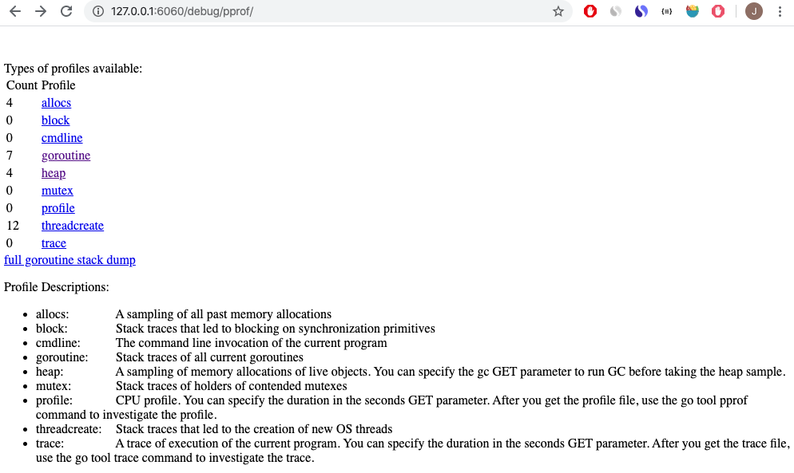
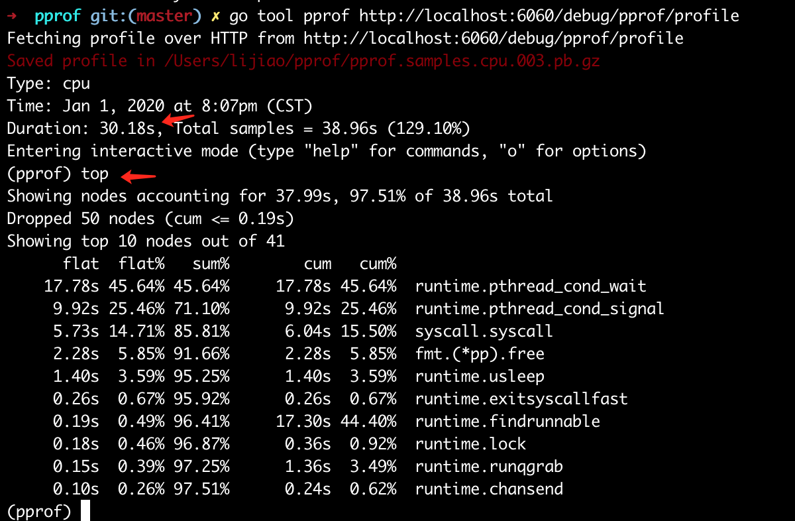
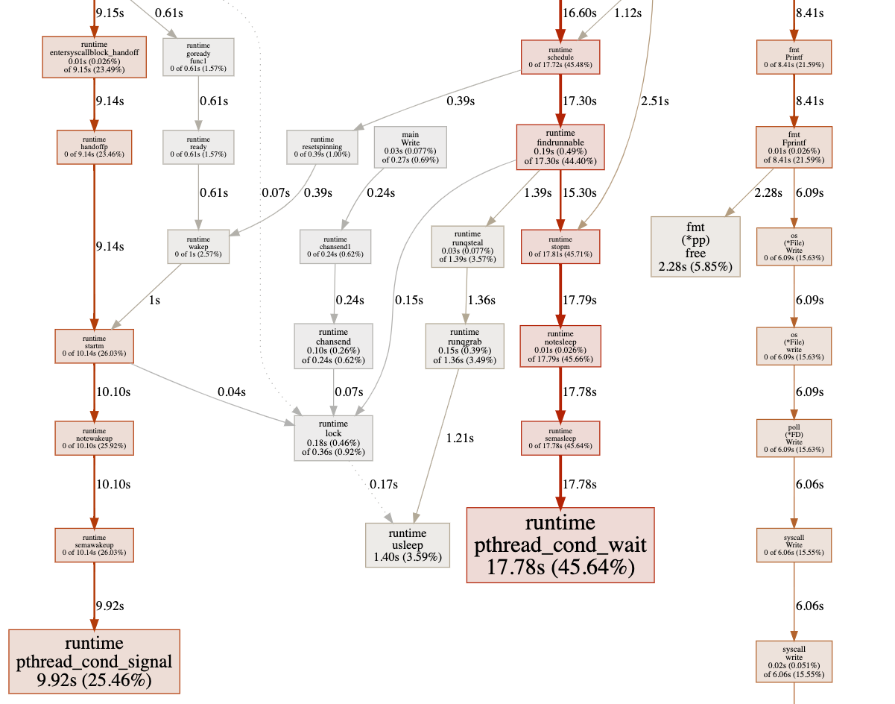
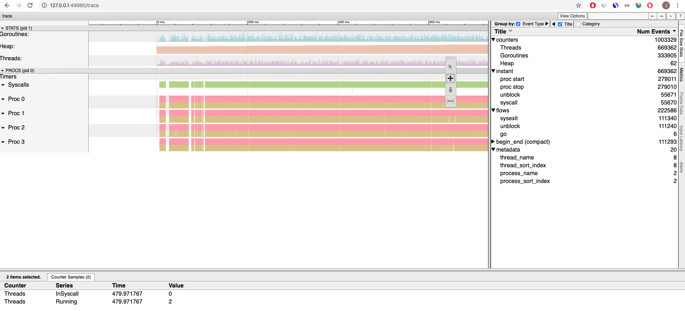

Go 语言程序运行时状态查看
上一节用 dlv 调试运行中的 Go 语言程序，dlv 会打断进程的运行，在开发测试时可以用。
对于生产环境中运行的进程，可以用 Go 内置的性能分析工具 pprof 窥测进程的当前状况。
Profiling Go Programs 很好地演示了用 pprof 找到性能瓶颈的过程，这里只演示简单用法。
启用实时的 pprof
启用实时的 pprof 非常简单，只需要引入 "net/http/pprof"，然后启动 http server 就可以了：
import (
"fmt"
"log"
"net/http"
_ "net/http/pprof"
"time"
)
func Write(num int, c chan int) {
for {
c <- num
}
}
func main() {
go func() {
log.Println(http.ListenAndServe("localhost:6060", nil))
}()
c := make(chan int)
go Write(10, c)
go Write(20, c)
for {
select {
case v := <-c:
fmt.Printf("receive %d\n", v)
time.Sleep(2 * time.Second)
}
}
}
直接用浏览器打开 http://127.0.0.1:6060/debug/pprof/ 查看：

其中 debug/pprof/profile 是 cpu 采样文件，访问时触发，用 seonds 参数控制采集持续时间：
# 默认是 30 秒
http://localhost:6060/debug/pprof/profile?seconds=30
360 的 Zhou Yang 在分享 Qihoo 360 and Go 中提到，他们基于 pprof 做了一套 web 展示：

对于非常驻运行的 Go 语言程序，可以在程序添加代码，经 pprof 信息写入文件中：
var cpuprofile = flag.String("cpuprofile", "", "write cpu profile to file")
func main() {
flag.Parse()
if *cpuprofile != "" {
f, err := os.Create(*cpuprofile)
if err != nil {
log.Fatal(err)
}
pprof.StartCPUProfile(f)
defer pprof.StopCPUProfile()
}
...
如何使用 pprof
如何使用 pprof 才是重点，除了 profile 和 trace ，其它 url 可以直接在浏览器中查看，profile 和 trace 是两个采样文件要分别用 pprof 和 trace 工具查看。
对于离线文件：
$ go tool pprof havlak1 havlak1.prof
Welcome to pprof! For help, type 'help'.
(pprof)
对于在线地址，以 cpu 采样为例（为了采集到数据把上面程序中的 sleep 时间调整为 0）：
$ go tool pprof http://localhost:6060/debug/pprof/profile # 30-second CPU profile

web 命令绘制采样图并用浏览器打开 ，如果遇到下面错误，安装 graphviz：
(pprof) web
failed to execute dot. Is Graphviz installed? Error: exec: "dot": executable file not found in $PATH
macOS 上安装：
$ brew install graphviz
绘制的采样图如下：

右键在单独窗口打开原始图片，svg 格式，可缩小放大：原始图片
{kind=link}
trace 查看
trace 要将文件下载以后，用 go tool trace 查看：
$ wget http://localhost:6060/debug/pprof/trace
$ go tool trace trace
打开效果如下：

参考